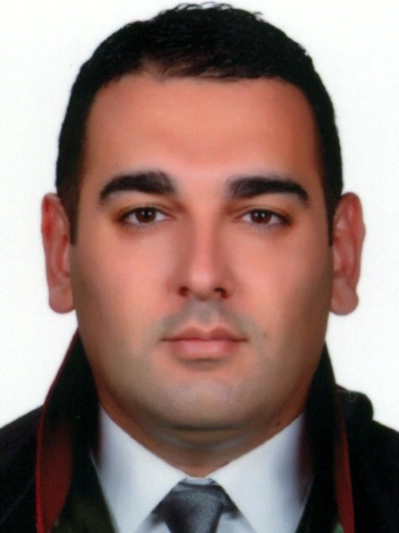

Aile Hukuku
Anlaşmalı ve çekişmeli boşanma, velayet, nafaka, mal rejiminin tasfiyesi ve tanıma–tenfiz davaları.
Av. Mustafa Gelegen & Av. Merve Gelegen
Gelegen Hukuk Bürosu; Malatya'da bireysel ve kurumsal müvekkillerine çeşitli hukuk alanlarında dava takibi ve hukuki danışmanlık hizmeti sunar. Her dosyayı, kendi koşulları içinde titizlikle değerlendirir, müvekkillerimizin ihtiyaçlarına uygun çözüm odaklı hukuki yaklaşımlar geliştiririz.
Çalışma Alanlarımız
Aşağıdaki alanlarda dava ve takip işlerini yürütüyor, uyuşmazlık doğmadan önce önleyici hukuki danışmanlık sağlıyoruz.
Anlaşmalı ve çekişmeli boşanma, velayet, nafaka, mal rejiminin tasfiyesi ve tanıma–tenfiz davaları.
Soruşturma ve kovuşturma aşamalarında şüpheli/sanık müdafiliği, mağdur ve katılan vekilliği, istinaf–temyiz başvuruları.
İşe iade, kıdem ve ihbar tazminatı, fazla mesai ve işçilik alacakları, iş kazasından doğan tazminat talepleri.
Şirket kuruluşu, pay devri, genel kurul süreçleri, ticari sözleşmelerin hazırlanması ve ticari uyuşmazlıkların çözümü.
İlamlı–ilamsız icra takipleri, itirazın iptali, istihkak davaları ve alacak tahsil süreçlerinin yönetimi.
Tapu iptali ve tescil, ortaklığın giderilmesi, kira uyuşmazlıkları, kat karşılığı inşaat sözleşmeleri.
Mirasçılık belgesi, tenkis ve tasarrufun iptali davaları, mirasın paylaştırılması ve vasiyetname düzenlenmesi.
İptal ve tam yargı davaları, idari para cezalarına itiraz, kamulaştırma ve vergi uyuşmazlıkları.
Ekibimiz
Dosyanızı, ilgili alanda çalışan avukatımız baştan sona kendisi takip eder.

Avukat / Kurucu Ortak
Aile, ceza, iş ve sosyal güvenlik, ticaret ve şirketler, icra ve iflas, gayrimenkul, miras ile idare ve vergi hukuku alanlarında dava takibi ve danışmanlık hizmeti vermektedir.
Avukat / Kurucu Ortak
Aile, ceza, iş ve sosyal güvenlik, ticaret ve şirketler, icra ve iflas, gayrimenkul, miras ile idare ve vergi hukuku alanlarında dava takibi, sözleşme hazırlığı ve kurumsal danışmanlık yürütmektedir.
Hakkımızda
Gelegen Hukuk Bürosu, hukuki sorunların yalnızca dava salonunda değil, doğru zamanda alınan doğru kararlarla çözüldüğü anlayışıyla çalışır. Müvekkillerimize dosyanın olası sonuçlarını, süresini ve maliyetini baştan açık biçimde aktarırız.
Nasıl Çalışıyoruz?
Telefon veya iletişim formu üzerinden randevu oluşturulur; talebiniz kısaca dinlenir.
Belgeler incelenir, hukuki durum ve olası yol haritası yazılı ve sözlü olarak değerlendirilir.
İş kabulü hâlinde vekâletname düzenlenir, ücret ve süreç planı yazılı olarak belirlenir.
Dava veya takip yürütülür; her önemli aşamada bilgilendirme yapılır.
Sık Sorulan Sorular
Kimlik belgeniz ile birlikte konuya ilişkin elinizdeki tüm evrakı (sözleşme, tebligat, mahkeme kararı, yazışmalar, ödeme belgeleri) getirmeniz görüşmeyi hızlandırır. Belge eksikliği görüşmeye engel değildir.
Ücret; işin niteliği, süresi ve kapsamı dikkate alınarak, ilgili yıla ait Avukatlık Asgari Ücret Tarifesi'nin altında kalmamak kaydıyla belirlenir ve iş kabulünden önce yazılı avukatlık sözleşmesiyle kayıt altına alınır.
Evet. İlk görüşme telefon veya çevrimiçi görüşme yoluyla yapılabilir; vekâletname noter aracılığıyla bulunduğunuz ilden düzenlenebilir.
Süre; dosyanın türüne, delil durumuna, bilirkişi incelemesi gerekip gerekmediğine ve mahkemenin iş yoğunluğuna göre değişir. Bu nedenle kesin bir süre taahhüdünde bulunulması mümkün değildir; görüşmede benzer dosyalar için öngörülen ortalama süreler paylaşılır.
Evet. Avukatlık Kanunu m. 36 uyarınca avukatın sır saklama yükümlülüğü vardır. Bu yükümlülük, iş kabul edilmese dahi devam eder.
Evet. Büromuz Battalgazi'de bulunmakla birlikte Yeşilyurt, Akçadağ, Darende, Doğanşehir, Hekimhan, Pütürge, Arapgir ve diğer ilçelerden gelen müvekkillerin dosyalarını da takip etmektedir. Dosyanın görüleceği mahkeme, uyuşmazlığın türüne ve yetki kurallarına göre belirlenir.
Malatya'daki adli ve idari yargı mercilerinde; aile, iş, asliye hukuk, asliye ticaret, sulh hukuk, icra, ceza ve idare mahkemelerinde dava ve takip işleri yürütülmektedir. Kanun yolu aşamasında istinaf ve temyiz başvuruları da takip edilir.
Makaleler
Sık karşılaşılan hukuki soruları, güncel mevzuat çerçevesinde yalnızca bilgilendirme amacıyla ele alıyoruz.
Aile Hukuku
Eşler boşanmanın kendisi veya sonuçları (velayet, nafaka, tazminat, mal paylaşımı) konusunda anlaşamıyorsa boşanma çekişmeli dava yoluyla görülür. Bu yazıda boşanma sebeplerini ve davanın nasıl ilerlediğini özetliyoruz.
İş Hukuku
Kıdem tazminatı, belirli bir süre çalışmış işçinin iş sözleşmesi kanunda sayılan sebeplerle sona erdiğinde işveren tarafından ödenen bir tazminattır. Bu yazıda hangi durumlarda kıdem tazminatı alınabileceğini ve nasıl hesaplandığını özetliyoruz.
Gayrimenkul Hukuku
Miras yoluyla veya birlikte satın alınan hisseli taşınmazlarda paydaşlar anlaşamadığında, ortaklık mahkeme kararıyla sona erdirilebilir. Bu yazıda ortaklığın giderilmesi davasının şartlarını ve işleyişini özetliyoruz.
Hizmet Bölgemiz
Büromuz Battalgazi'de bulunmaktadır. Malatya merkez ve aşağıdaki ilçelerden gelen müvekkillerin dosyalarını takip ediyor; şehir dışındaki müvekkillerle telefon veya çevrimiçi görüşme yoluyla çalışıyoruz.
Randevu
Hukuki sürecinizde zaman çoğu kez belirleyicidir. Talebinizi iletin, en kısa sürede size dönüş yapalım.